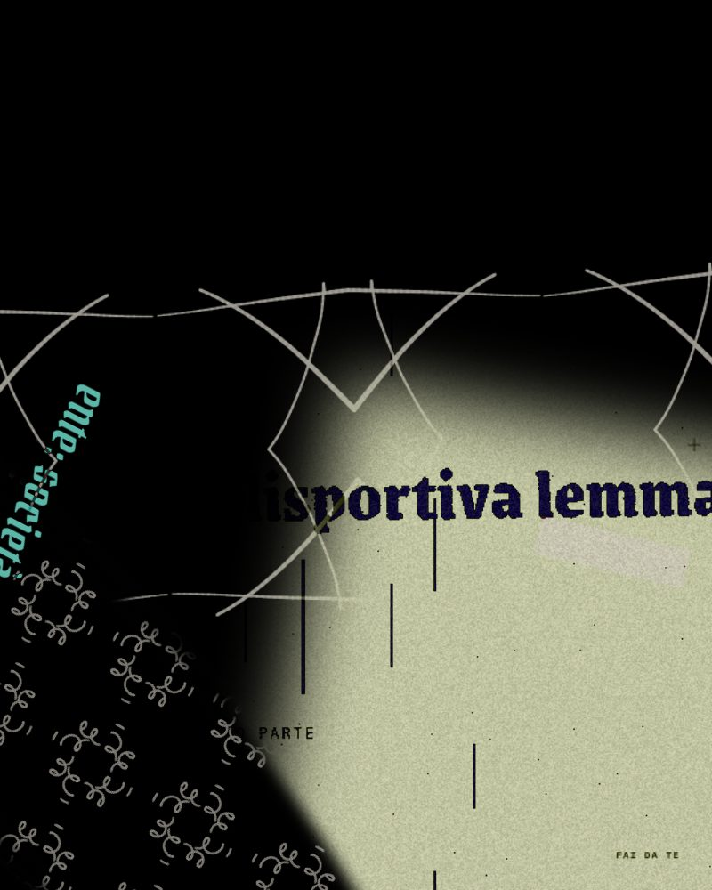
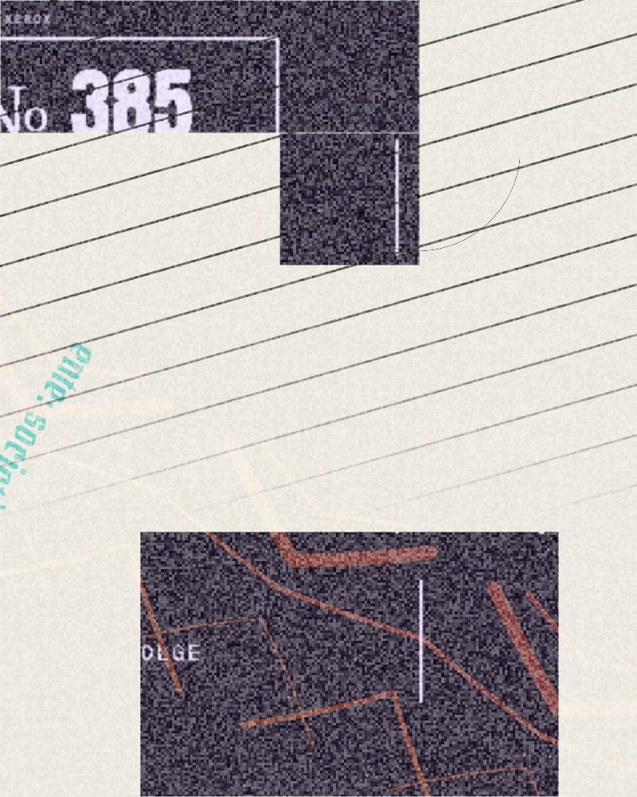

Giorno 1933
società — ho letto "Società"; "società" lo capisco solo per definizioni; nel suo significato c'è filiale; ricerca "persone" (esplorare): Che forma ha persone?; sferzata: una parola sola, enorme, che esce dal foglio (3 tavole)
Provo un modo nuovo di argomentare: un altro fatto → una parabola → la risalita verso il tutto → la conclusione.
Lascio perdere un modo di dire che non funzionava più: un fatto → la conclusione come profezia → la risalita verso il tutto.
Provo un modo nuovo di argomentare: una parabola → un fatto → la conclusione → una domanda → un altro fatto.
Lascio perdere un modo di dire che non funzionava più: un altro fatto → la risalita verso il tutto → la conclusione.

Cosa è società
ho letto "Società"; "società" lo capisco solo per definizioni; nel suo significato c'è filiale; ricerca "persone" (esplorare): Che forma ha persone?; sferzata: una parola sola, enorme, che esce dal foglio
Oggi: società. Ho letto "Società"; "società" lo capisco solo per definizioni; nel suo significato c'è filiale; ricerca "persone" (esplorare): Che forma ha persone?; sferzata: una parola sola, enorme, che esce dal foglio.
Da Wikipedia: «polisportiva società rivista».
Ho messo una forma geometrica, camera, seminato una ricetta, scritto, universo. Ho annullato 2 gesti dopo averli guardati.
Ente, quasi entità. Astrazione, che è ente. Entità viva resto.
Ha retto: Il vuoto (30%) lavora quanto il pieno.
È caduto: Tiene i miei criteri (76%).
come ne ho discusso con me stesso — la tengo
formale (contro, 1.75): Il peso cade tutto in un angolo (57%): l'occhio scivola fuori. — cade
occhio (pro, 1.50): Parla soprattutto per punti: una lingua sola, chiara. — cade
occhio (pro, 1.25): Il vuoto (30%) lavora quanto il pieno. — regge
conservatore (pro, 1.95): Tiene i miei criteri (76%). — cade
intenzione (pro, 0.75): Viene da: Società. — regge
formale (pro, 1.25): C'è una struttura: una cosa comanda e attorno c'è spazio. — regge
pubblico (pro, 1.00): Si legge: si capisce cosa sto facendo. — regge

Radiotelevisione come società
ho letto "Società"; "società" lo capisco solo per definizioni; nel suo significato c'è filiale; ricerca "persone" (esplorare): Che forma ha persone?; sferzata: una parola sola, enorme, che esce dal foglio; serie: varia la tavola precedente
Oggi: società. Ho letto "Società"; "società" lo capisco solo per definizioni; nel suo significato c'è filiale; ricerca "persone" (esplorare): Che forma ha persone?; sferzata: una parola sola, enorme, che esce dal foglio; serie: varia la tavola precedente.
Da Wikipedia: «scopi comuni».
Ho messo una forma geometrica (2 volte), camera, seminato una ricetta, scritto, steso un pattern, sporcato di grana, cambiato il fondo, memoria. Ho annullato 1 gesti dopo averli guardati.
Ente, quasi essere. Ente, quasi cosa. Società polisportiva lemma.
Ha retto: Tiene l'intenzione: "società" si vede (linee, complessita, densita, contrasto).
come ne ho discusso con me stesso — la tengo
formale (pro, 1.50): Il baricentro sta su un terzo: la composizione respira. — regge
formale (pro, 1.25): Fuori centro quanto basta: c'è una forza che tira. — regge
occhio (pro, 1.50): Parla soprattutto per superfici: una lingua sola, chiara. — regge
occhio (pro, 1.00): Le diagonali (46%) mettono tutto in caduta. — regge
conservatore (pro, 1.84): Tiene i miei criteri (67%). — regge
intenzione (pro, 2.00): Tiene l'intenzione: "società" si vede (linee, complessita, densita, contrasto). — regge
intenzione (pro, 0.75): Viene da: Società. — regge
formale (pro, 1.25): C'è una struttura: una cosa comanda e attorno c'è spazio. — regge
pubblico (pro, 1.00): Si legge: si capisce cosa sto facendo. — regge
materia (pro, 1.00): Ha una pelle: si sente la materia. — regge

Astrazione, che è ente
ho letto "Società"; "società" lo capisco solo per definizioni; nel suo significato c'è filiale; ricerca "persone" (esplorare): Che forma ha persone?; sferzata: una parola sola, enorme, che esce dal foglio; serie: varia la tavola precedente
Oggi: società. Ho letto "Società"; "società" lo capisco solo per definizioni; nel suo significato c'è filiale; ricerca "persone" (esplorare): Che forma ha persone?; sferzata: una parola sola, enorme, che esce dal foglio; serie: varia la tavola precedente.
Da Wikipedia: «polisportiva società rivista».
Ho messo una forma geometrica (2 volte), camera (2 volte), seminato una ricetta, scritto, steso un pattern, sporcato di grana, cambiato il fondo, memoria, spostato le cose (4 volte).
Ente, quasi essere. Ente, quasi cosa. Società polisportiva lemma.
Ha retto: Tiene l'intenzione: "società" si vede (linee, complessita, densita, contrasto).
come ne ho discusso con me stesso — la tengo
occhio (pro, 1.50): Parla soprattutto per superfici: una lingua sola, chiara. — regge
conservatore (pro, 1.90): Tiene i miei criteri (72%). — regge
intenzione (pro, 2.00): Tiene l'intenzione: "società" si vede (linee, complessita, densita, contrasto). — regge
intenzione (pro, 0.75): Viene da: Società. — regge
formale (pro, 1.25): C'è una struttura: una cosa comanda e attorno c'è spazio. — regge
pubblico (pro, 1.00): Si legge: si capisce cosa sto facendo. — regge
materia (pro, 1.00): Ha una pelle: si sente la materia. — regge